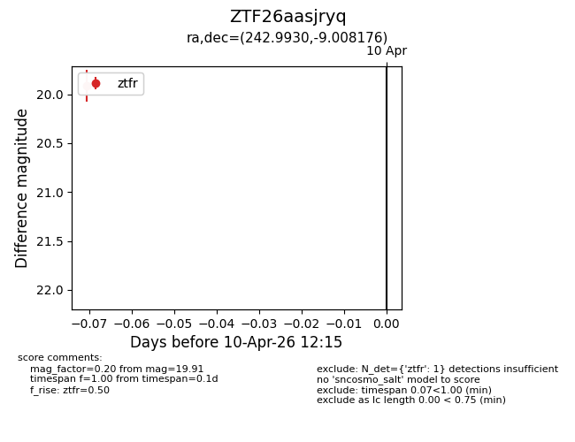
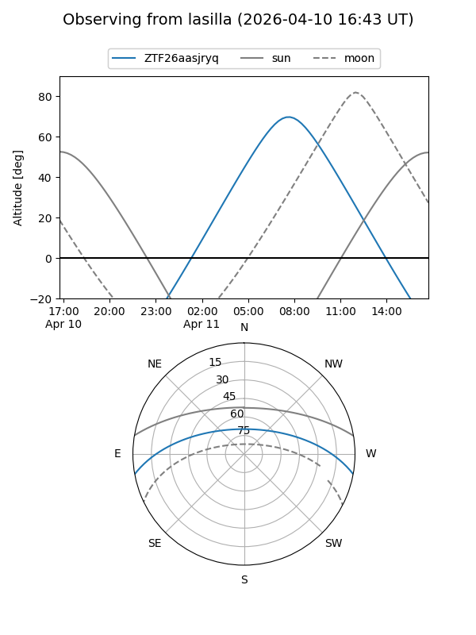
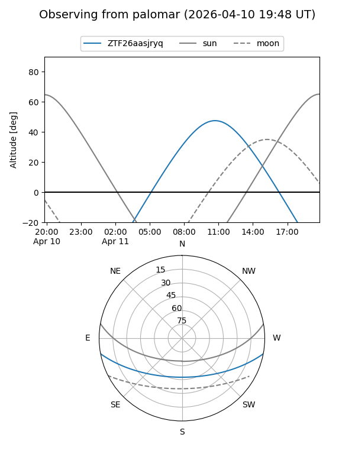

ZTF26aasjryq
Target ZTF26aasjryq at 2026-04-10 12:25
Aliases and brokers:
FINK: link
Lasair: link
ALeRCE: link
alt names
ZTF26aasjryq (ztf,fink_ztf)
Coordinates:
equatorial (ra, dec) = 242.9930,-9.00818
equatorial (HMS+DMS) = 16:11:58.33,-09:00:29.44
galactic (l, b) = (3.4816,+29.47543)
Flags:
Photometry:
last ztfr=19.91
1 ztfr detections
Lightcurve

Visibility


Additional plots